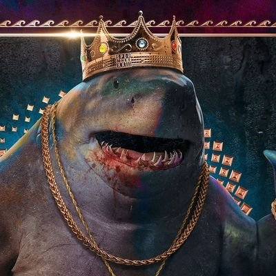
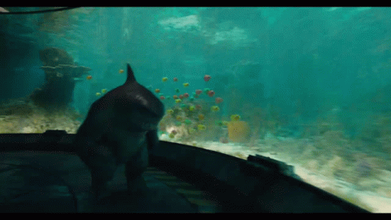
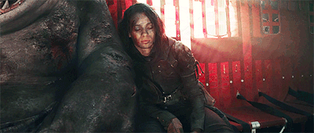
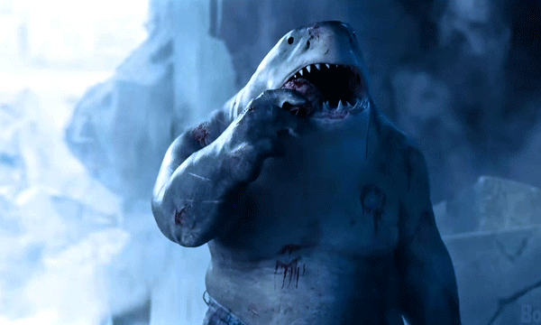
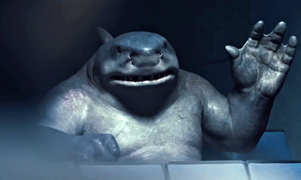

Após toda a apresentação e detalhes sobre os feitos dos personagens, declaro aqui que ele é um nenê que nunca fez nada de errado e merece todo o amor do mundo.

Agora, acompanhe um compilado de momentos fofos de Nanaue:
Nanaue quentinho com o abraço da Caça-Ratos II:
Nanaue feliz por ter feito amiguinhos novos:

Nanaue sendo o aconchego da Caça-Ratos II:

Nanaue dando um boneco feito com os explosivos da missão para o Pacificador, que ele mesmo fez (O boneco é o Pacificador):
Nanaue coçando os dentinhos com o crânio de uma de suas vítimas (Mostrando de novo porque essa cena é muito fofa):

E por último, novamente o Nanaue perguntando sobre sua mãozinha:

Bônus: Abra o link e veja a imagem do disfarce mais incrível já feito, o Nanaue ficou irreconhecível!